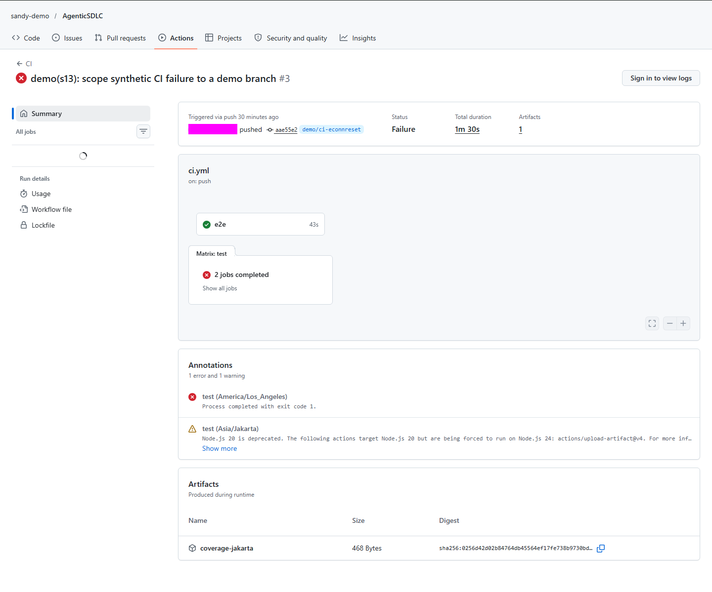
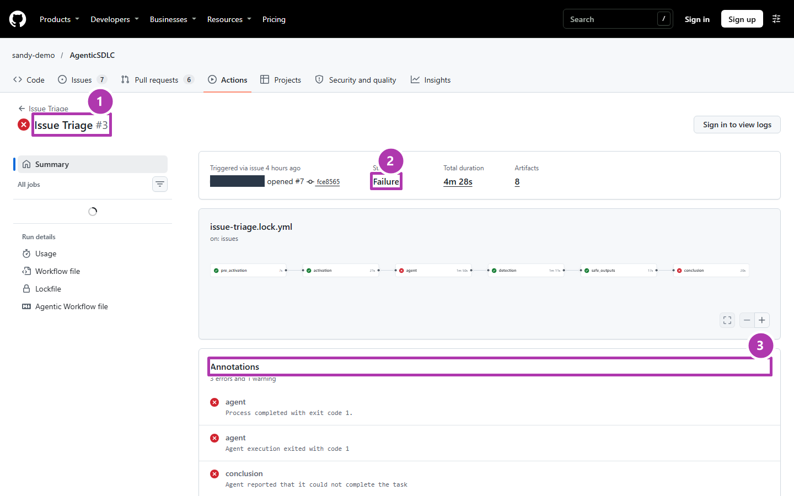
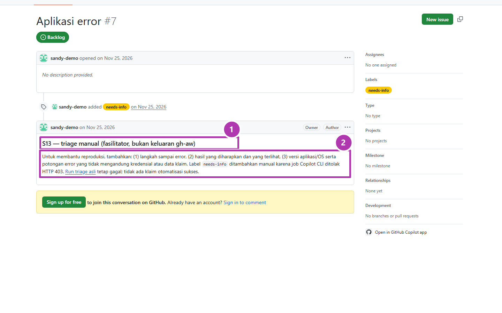
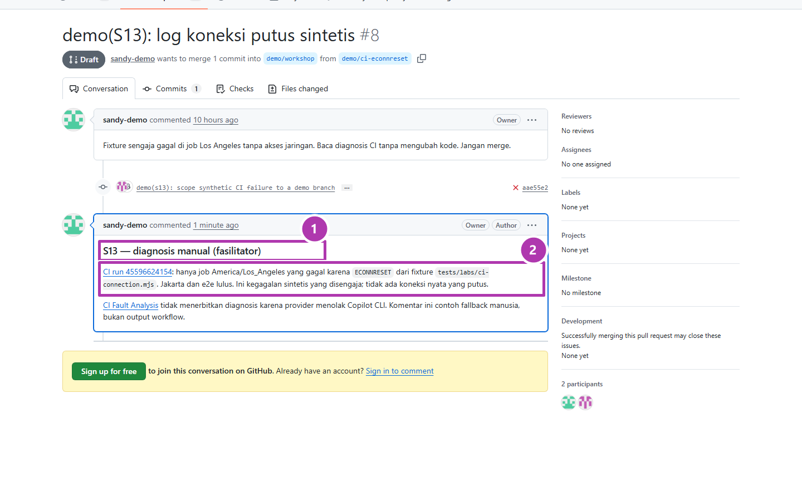
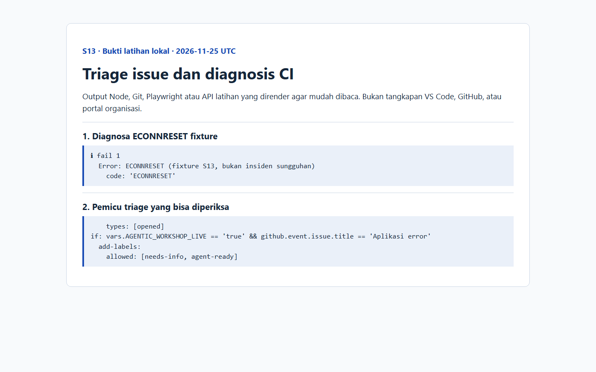
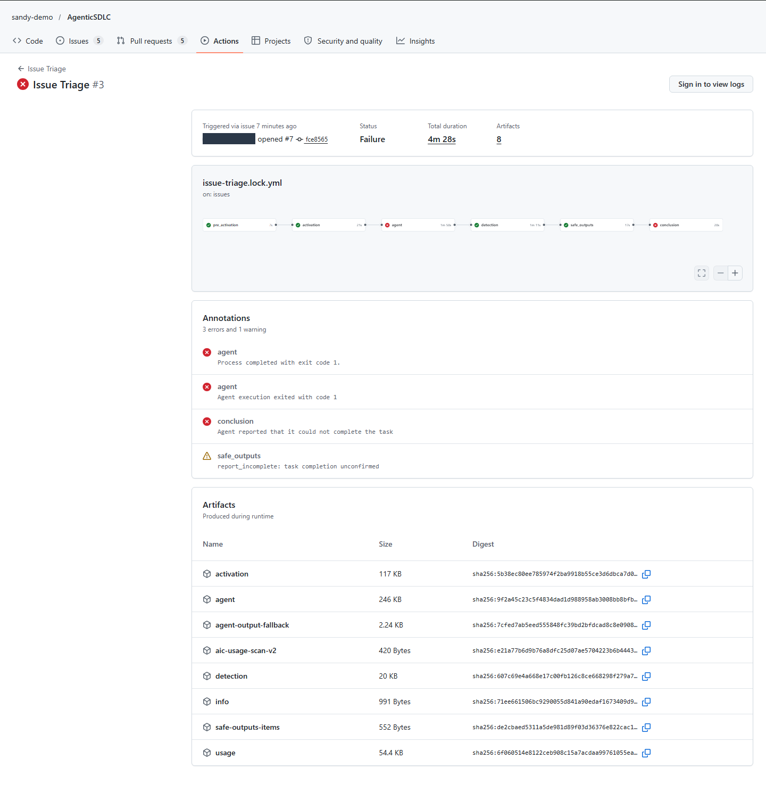
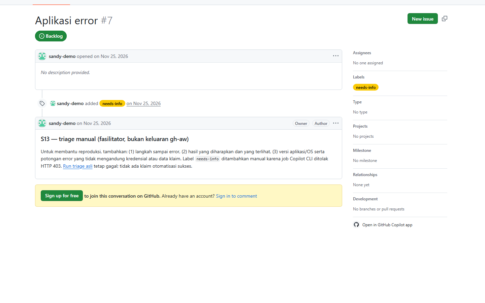
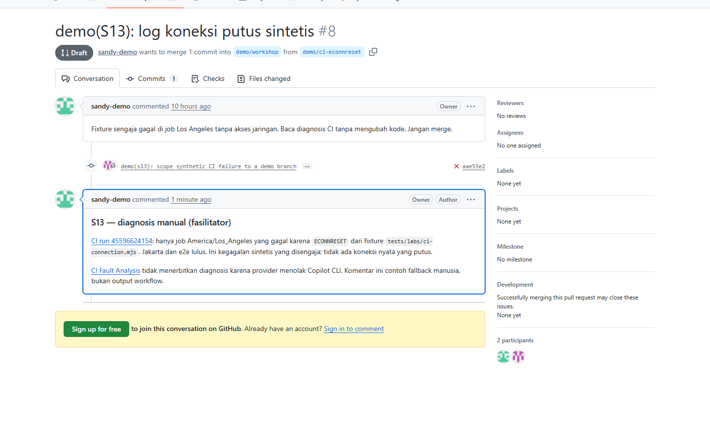

S13 · Level 4 — Continuous AI
Triage issue dan diagnosis CI
Minta Issue Triage menanyakan tindakan sebelum error dan pesan yang muncul. Minta CI Fault Analysis menunjuk job Los Angeles dan pesan gagal yang perlu diperiksa. Jika workflow belum jalan, tandai diagnosis fasilitator sebagai hasil manual.
Status latihan: Klarifikasi dan diagnosis ditulis fasilitator. Kedua workflow otomatis masih gagal dengan 403.. Lihat diagram interaksi · Ikuti langkah · Cek hasil · Langkah live · Ulangi dari awal.
Masalah yang dihadapi
Yoga menerima tiket yang hanya bilang Aplikasi error, tanpa layar, pesan error, atau langkah mengulang. Di latihan CI, job Los Angeles gagal dengan pesan ECONNRESET (koneksi putus), sementara Jakarta dan tes browser lulus. Kedua kasus butuh informasi yang lebih spesifik.
Kerugian: Tanpa petunjuk yang tepat, tim menebak cara mengulang bug atau membaca log dari job yang tidak gagal.
Masalah pada baseline
.github/workflows/ci-fault-analysis.md
Lihat potongan atau catatan sumber
workflow_run dibatasi ke CI pada demo/ci-econnreset; checkout dinonaktifkan.Solusi dan alur
Minta Issue Triage menanyakan tindakan sebelum error dan pesan yang muncul. Minta CI Fault Analysis menunjuk job Los Angeles dan pesan gagal yang perlu diperiksa. Jika workflow belum jalan, tandai diagnosis fasilitator sebagai hasil manual.
Alur kerja ringkas
GitHubTerima tiket baru atau CI gagal
Hasil: Ini dua pemicu terpisah. Untuk contoh CI, job Los Angeles gagal dengan pesan koneksi putus.
Workflow CopilotCoba klarifikasi atau diagnosis
Hasil: Issue Triage menangani tiket. CI Fault Analysis membaca log. Keduanya tidak menghasilkan keluaran karena ditolak layanan (403).
FasilitatorBeri tindak lanjut manual
Hasil: Tiket diberi needs-info; komentar diagnosis menunjuk job Los Angeles. Itu hasil manusia, bukan bukti workflow berhasil.
Diagram interaksi
Dua pemicu terpisah: tiket kurang detail dan tes gagal.
A. Saat tiket baru tidak punya detail
-
Tiket / PRGitHub keAutomasiGitHub Actions
-
AutomasiGitHub Actions keLayanan CopilotGitHub
-
Layanan CopilotGitHub keAutomasiGitHub Actions
-
FasilitatorTiket / komentar PR keTiket / PRGitHub
B. Saat tes Los Angeles gagal
-
CI latihanGitHub Actions keAutomasiGitHub Actions
-
AutomasiGitHub Actions keLayanan CopilotGitHub
-
Layanan CopilotGitHub keAutomasiGitHub Actions
-
FasilitatorTiket / komentar PR keTiket / PRGitHub
Lihat diagram lengkap

- Push demo/manual → Docs Sync → draft PR docs.
- Issue latihan dibuka → Issue Triage → label atau komentar.
- CI latihan gagal → CI Fault Analysis → satu komentar pada PR pemicu.
Lihat sumber Mermaid
flowchart TB
push["Push demo / manual"] -->|Bandingkan kontrak| docs["Docs Sync"]
issue["Issue latihan dibuka"] -->|Nilai kelengkapan| triage["Issue Triage"]
ci["CI latihan gagal"] -->|Baca log| fault["CI Fault Analysis"]
docs -->|Izinkan draft PR docs| pr["Satu PR"]
triage -->|Izinkan label dan jawaban| label["Issue pemicu"]
fault -->|Izinkan satu komentar| comment["PR pemicu"]
classDef ai fill:#efe6ff,stroke:#7354a4,color:#382459
class docs,triage,fault aiLangkah demo
Yang kamu lakukan
- Pada repo latihan dengan workflow yang sudah diizinkan, pilih Issues → New issue. Isi Aplikasi error tanpa detail. Cari apakah Issue Triage meminta langkah mengulang, bukan menebak penyebab.
- Di Actions buka contoh run CI yang gagal. Pilih job Los Angeles dan cari pesan koneksi putus. Bandingkan dengan Jakarta yang lulus sebelum menilai diagnosis.
- Periksa keluaran workflow di tiket atau PR. Jika petunjuk ditulis fasilitator karena automasi gagal, tandai sebagai manual. Jangan menyetujui diagnosis yang tidak menunjuk buktinya.
Issue adalah tiket kerja. PR (pull request) adalah usulan perubahan; jika masih draft, hasilnya belum digabung. Files changed atau Changes menunjukkan file yang berubah. Checks menunjukkan hasil tes otomatis.
Ikuti alur GitHub dari tiket sampai review jika latihanmu memakai PR. Tautan contoh di bawah hanya membuka hasil yang sudah ada.
Contoh dan cara cek hasilnya
Cari job CI yang gagal, bukan sekadar tanda merah
Buka job Los Angeles dan cari ECONNRESET (koneksi putus). Jakarta dan tes browser lulus. Gunakan perintah lokal untuk melihat kegagalan simulasi tanpa membuka log GitHub.
Lihat run CI untuk latihan koneksi putus
node --test tests/labs/ci-connection.mjs
Perbesar S13-ci-failure.pngLayar ringkasan GitHub Actions publik · bukan hasil revisi agent · Actions publik: ringkasan run CI berstatus Failure dan job LA merah. Triage issue tanpa detail
Jika workflow sudah diizinkan, buat tiket latihan berjudul Aplikasi error tanpa detail. Targetnya label needs-info dan pertanyaan klarifikasi. Tautan contoh ini berisi tindak lanjut manual.
Lihat contoh tiket yang butuh informasi #7
Aplikasi error Perbesar S13-before.png
Perbesar S13-before.pngSumber GitHub · Buka Issues → New issue. Ini keadaan awal: hanya judul Aplikasi error dan No description provided. Pisahkan kegagalan tes dari kegagalan automasi
CI Los Angeles sengaja gagal karena contoh koneksi putus. Kedua workflow Copilot ditolak layanan (403). Pesan 403 menjelaskan kenapa tidak ada keluaran otomatis, bukan kenapa tes Los Angeles merah.
Lihat run Issue Triage · Lihat run CI Fault Analysis
gh run view 45596624154 -R sandy-demo/AgenticSDLC
Perbesar S13-triage-controls-annotated.pngSumber GitHub · 1. Actions → Issue Triage → pilih run #3. · 2. Periksa status Failure sebelum menyimpulkan label sudah dibuat. · 3. Lihat Annotations, lalu job agent → Execute GitHub Copilot CLI; log terverifikasi HTTP 403. Lakukan triage manual saat provider tidak bisa dipakai
Pada tiket #7, fasilitator menambahkan needs-info dan meminta langkah mengulang serta pesan error. Itu contoh hasil yang ingin dicapai, tetapi dibuat manusia.
Baca klarifikasi manual pada tiket #7

Perbesar S13-manual-triage-annotated.pngSumber GitHub · 1. Baca judul triage manual; bukan keluaran gh-aw. · 2. Minta langkah reproduksi, hasil harapan/aktual, dan versi. Sidebar needs-info ditambahkan fasilitator setelah kegagalan workflow. Tautkan diagnosis ke job yang benar
Pada draft PR #8, komentar fasilitator menunjuk job Los Angeles dan pesan ECONNRESET. Catatan membantu tim melanjutkan diagnosis; bukan bukti workflow berhasil.
Baca diagnosis manual pada draft PR #8

Perbesar S13-manual-diagnosis-annotated.pngSumber GitHub · 1. Baca penanda diagnosis manual. · 2. Cocokkan run LA gagal pada fixture, Jakarta dan e2e lulus. Tidak ada koneksi nyata terputus dan tidak ada output gh-aw yang diklaim.


Cek hasil
Issue #7 sekarang berlabel needs-info dengan pertanyaan dari fasilitator. Draft #8 punya diagnosis manual yang menunjuk job LA; Jakarta dan e2e lulus. Kedua workflow automasi tetap gagal HTTP 403. Jangan menghitung fallback sebagai komentar gh-aw.
Bukti latihan terverifikasi
Langkah live
Prasyarat dan petunjuk pengambilan bukti
Akun dan PAT untuk Copilot CLI perlu diverifikasi admin jika 403. Jalankan hanya pada issue/pull request latihan. AGENTIC_WORKSHOP_LIVE sementara dimatikan kembali setelah run. Jangan mengganti Secret tersimpan dengan token yang lebih luas untuk mengakali penolakan.
S13-01-triage.pngSetelah Issue Triage selesai sukses, buka Issues → Aplikasi error yang body awalnya kosong. Foto sidebar Labels dengan needs-info dan komentar pertanyaan klarifikasi; jangan pakai label yang ditambahkan manual sebagai bukti agent.
S13-after.pngBuka draft cabang demo/ci-econnreset → Conversation. Foto komentar diagnosis yang benar-benar terbit dari CI Fault Analysis dan menaut ke job LA. Pastikan komentar menyebut ECONNRESET fixture dan bukan kesalahan autentikasi agent.
Sebelum dan sesudah
Perbesar S13-before.pngS13-after.png| Bagian | Sebelum | Sesudah / target |
|---|---|---|
| Perilaku | Fixture cabang latihan memberi ECONNRESET tanpa membuka koneksi. | Target: label needs-info dan satu komentar pada PR pemicu. Keduanya tidak terbit karena panggilan Copilot CLI ditolak. |
| Bukti visual | Ada tangkapan GitHub. | Belum direkam. |
| Keputusan | Peserta membaca keadaan awal. | Manusia memeriksa hasil sebelum meneruskan. |
Manfaat
- Maintainer bisa langsung mengambil issue yang siap.
Bukti dan sumber
Template issue S13 · Data latihan dan pengukuran.


Perbesar S13-local-result.pngBukti GitHub live
Run awal menunjukkan pemicu dan HTTP 403. Label dan diagnosis kini tersedia sebagai tindakan fasilitator, bukan safe output agent. Tidak mengubah hasil run asli.
- issues/7
- pull/8
- actions/runs/45596624154
- actions/runs/45596615909
- actions/runs/45596785536
- actions/runs/45567770139
Perbesar S13-before.png

Perbesar S13-triage-auth-error.png Perbesar S13-ci-analysis-auth-error.png
Perbesar S13-ci-analysis-auth-error.png

Perbesar S13-manual-triage.png

Perbesar S13-manual-diagnosis.png2 layar yang belum direkam
S13-01-triage.pngS13-after.png
Ulangi latihan
Pemeriksaan tidak menulis kode atau data remote. Ulangi perintah di terminal baru bila sebelumnya mengubah variabel lingkungan.
npm run reset -- --fresh